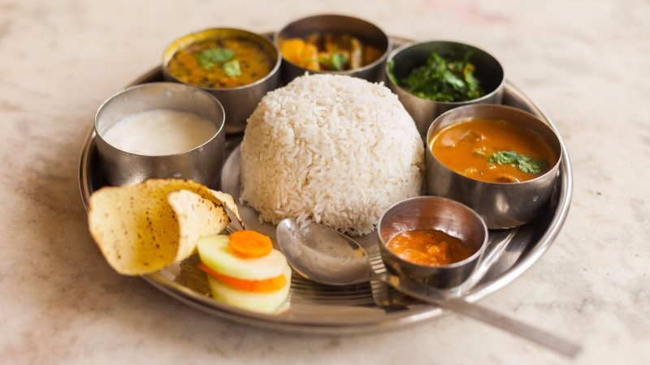
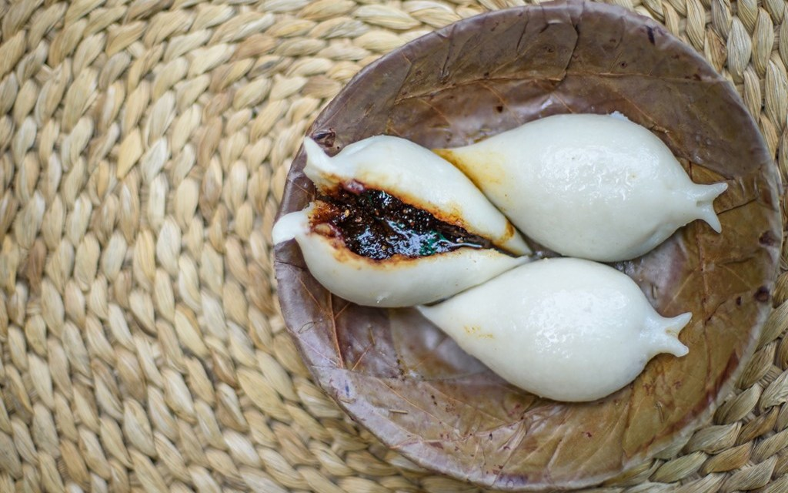

A form of expression
The best way to understand the way of life in a country is to experience their food. The cuisines found in Nepal are
mainly similar to Tibetan and Indian style of cooking.
With a vast number of ethic groups and regions, each have their
own delicacies native to them.
In this section, we will explore the most popular and classic dishes of Nepal.

Daal Bhat
Every country has its own staple food, for Nepal, it's Dal Bhat. Its direct translation is
“lentils and rice”.
With agriculture taking up almost ⅓ of Nepal’s GDP, it makes sense
for rice to be the most consumed crop.
This is the main dish consumed by millions of
Nepalese people daily throughout the year, most commonly for
lunch or dinner.
Most of the time, Daal Bhat is complemented with side dishes including vegetables or
meat.
The side dishes can vary significantly from one region of the country to another,
each with its own twist to
the dish.
Daal Bhat is the best option for visitors looking for a healthy and tasty dish that is
guaranteed to fill you up!

Momos
The momo is the most iconic dish in Nepal.The momo is a very popular dish in Nepal
and is found in almost
every corner of the country and an essential dish for hotels and
restaurants to produce.
A momo, in its
simplest form, is a type of dumpling native to Nepal. The outside
covering is made of dough made by mixing
water and flour.The inside filling of the
momo usually consists of minced meat or vegetables mixed with
spices to excite the
taste buds.
It also has several variations popular with Nepalis, some include:
Chilly momo, Jhol
momo, Cheese Momo.

Yomari
The next food on our list is a sweet one! The Yomari is a dish from the Newar ethic
group from Kathmandu.
It is a dumpling-like delicacy where the outer layer is made
from rice flour while the inside has a sweet
filling called “chaku”, that translates to sweet
in the Newari language.
The chaku is made of brown cane sugar
and sesame seeds. The Yomari is mainly made
during “Yomari Punhi'' festival. The festival is celebrated during
the full moon of
december which marks the end of the rice harvest, and is consumed as a gift from god.
The
Yormari is a delicacy of the Kathmandu valley and it is recommended for travelers
looking to experience a new take on sweets.